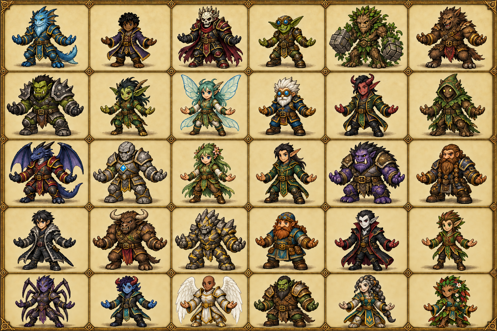
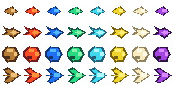
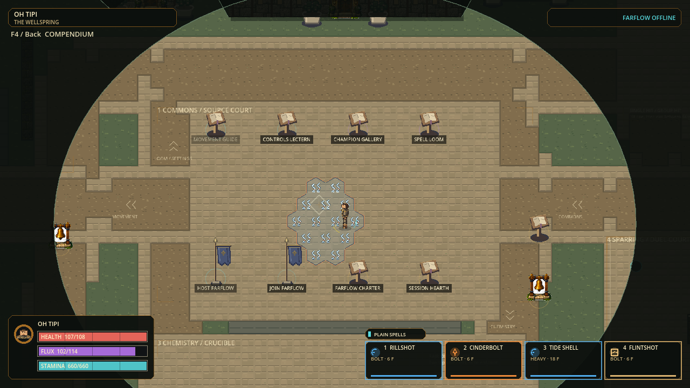
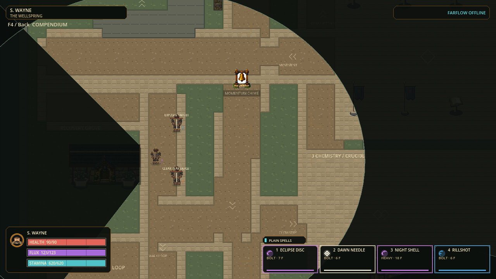

REFERENCE COMPARISON · NO NEW RUNTIME ACCEPTANCE
H.E.X. — compact bodies, clear threats
Existing source pixels, staged motifs, and historical native captures. This board authors no image, changes no catalog, and is not a Godot playback or performance test.
Read the authority table and acceptance contract
1 · Identity reference versus loaded body foundation
The September 14 final cast supplies identity/proportion direction. It is an illustrated reference, not a pixel atlas or thirty completed skins. No newer accepted reference was found. Human aesthetic approval remains open.

REFERENCE · cast_proportions_v5 final · Original 1536×1024 illustration. Never cut directly into live animation sheets.
The three brown adventurers below are the actual shared body source used for all thirty identities. UI labels such as Oh Tipi do not make this a Seakin skin. Controls inspect the source atlas only; animation below advances by wall-clock time, not gameplay travel.
Thin cyan line marks pivot Y=84, not the collision radius. Standing targets 58/63/68 px; crouched/air poses must not be stretched to meet standing height. Source authoring heights are separately 58/68/76.
2 · Projectile silhouette grammar already in runtime source

RUNTIME SOURCE · 24×24 cells · displayed 4× for inspection. Rows: Rapid, Bolt, Heavy, Spray. Columns in stored wire order: Earth, Fire, Water, Air, Ice, Charge, Light, Dark. Preserve IDs; requested review order remains Water, Earth, Fire, Air, Ice, Charge, Light, Dark.Keep these simple, directional cores. Let bounded launch/interception/impact/expiry cues express the events. Glow must never imply a larger collision or dangerous footprint. Rapid remains economical.
3 · Current native material versus staged pixel motifs

HISTORICAL NATIVE · Sept 21 smaller-grid capture. Actual game rendering, not today's candidate. Steam curls and occupied cell outlines are visible; staged motif assets were not integrated.HISTORICAL NATIVE · reduced effects counterpart. Static stills cannot prove animation, damage alignment over time, or performance.STAGED ONLY: unchanged 64×80 source cells, eight columns. At current 48 px face-to-face geometry a prospective 0.75 cosmetic adapter yields a 48×60 sample, clipped to each authoritative polygon. Rows are material phases; this board shows source sheets and invents no phase timing.
4 · Fog and visible walls: historical native boundary
HISTORICAL NATIVE · Sept 20 after-v2 · circular 360° region and strong dark occlusion. This is not the fresh wall-surface repair baseline.
HISTORICAL NATIVE · same recorded fixture, reduced mode. Fresh before/after surface fix captures are pending lead execution. Target: visible first wall surface, occluded actors absent, gently darkened terrain beyond, restrained transition. A wall sprite is not merely its ground anchor. Retain character-centered 360° sight; no aim-driven cone. Presentation hiding does not prove network information security.
Smallest acceptance sample
First approve visibility surface correctness and one paid Water patch with normal/reduced motifs at default and zoomed-out views, light/dark floor, expiry, holes, and overlap. Then review Small contact/travel motion and one complete S. Wayne skin before expanding ancestry art. Preserve Middle and Large as size controls. The candidate skin must retain his dark skin, compact Hobbit silhouette, empty hands and distinctive coat.
Authoring, static source review, source runtime capture, exact-export capture and human acceptance must remain separate evidence states.